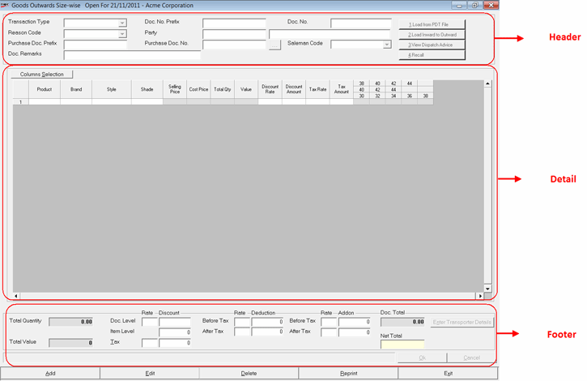

This option is used to add an size-wise outwards transaction of goods.
The Goods Outwards Size-wise window to add a transaction is displayed. The fields displayed are indicative and would depend on the transaction type selected.
The details accepted during goods outwards size-wise transaction can be grouped as shown.

Click the links to learn more about each group.
Header: The header part of the goods outwards size-wise window allows you to accept details like purchase returns, transfers out and miscellaneous issue. Also, the details like reason code, document number and prefix, purchase document prefix and number, party, salesman code are accepted in the header part. Apart from this, the header part allows you to import item details from a PDT file, load from inward to outward, view dispatch advice and recall packing/ pallet slips (if any).
Detail: The detail part of the goods outwards size-wise window has item details grid to accept the details stock no., item description, selling price and quantity and so on, of each item selected for despatch.
Footer: The footer part of the goods outwards size-wise window displays the transaction totals like total quantity, total value, item level and document level discounts, total add-ons and deductions before and after tax, the document total and the net total. Apart from the totals, you can enter the transporter details, access a list of hotkeys applicable.